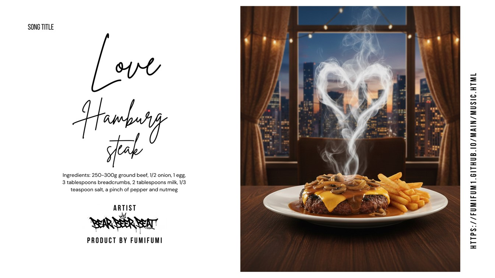
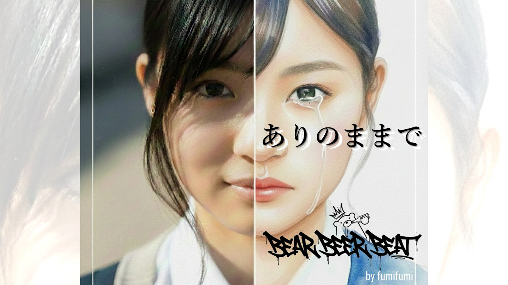
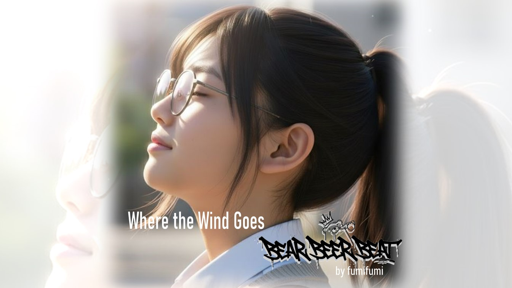
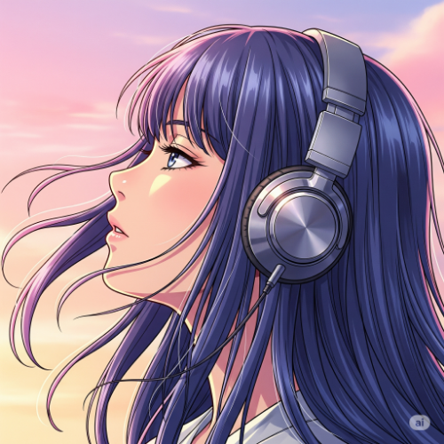
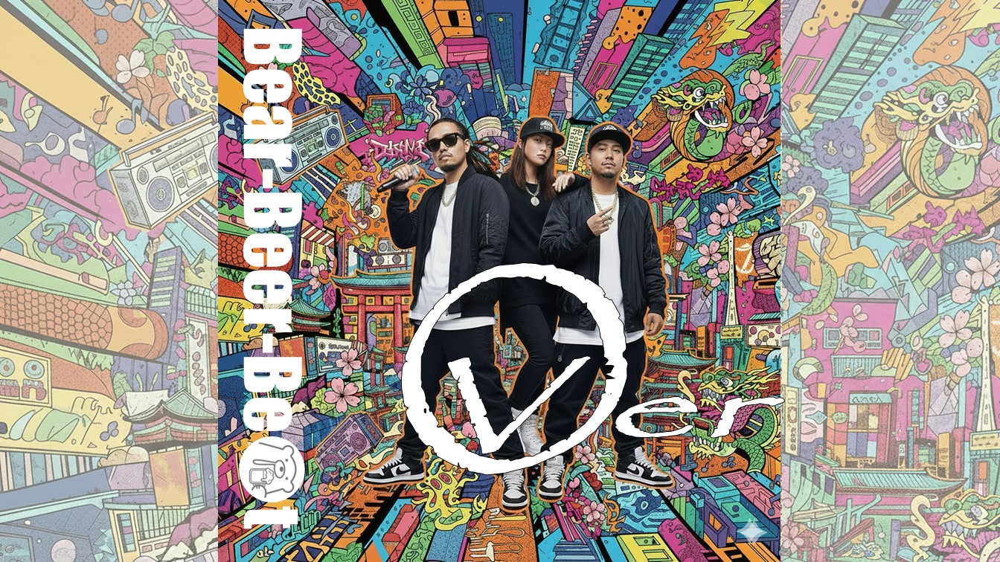
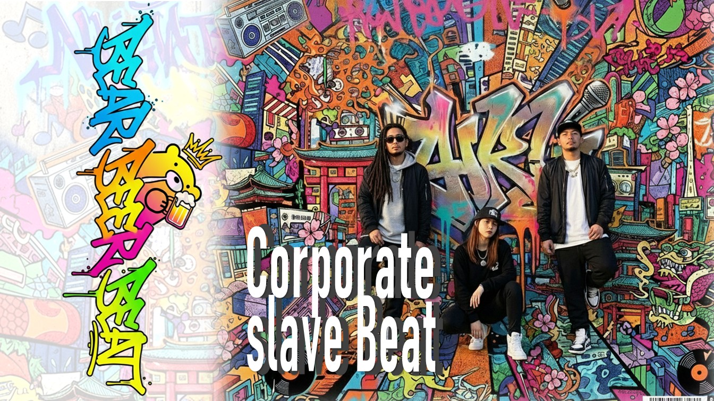
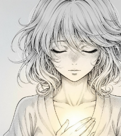
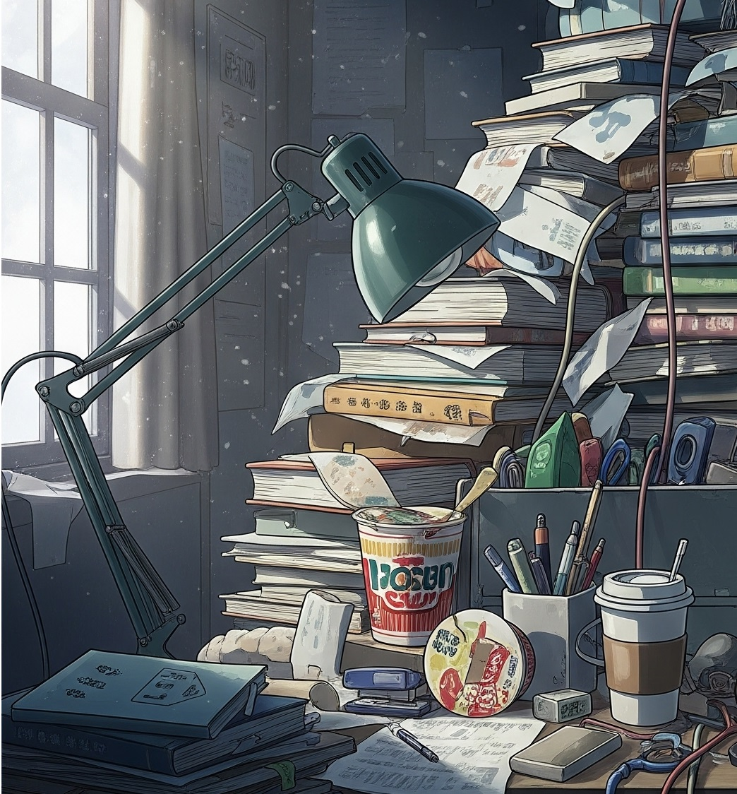
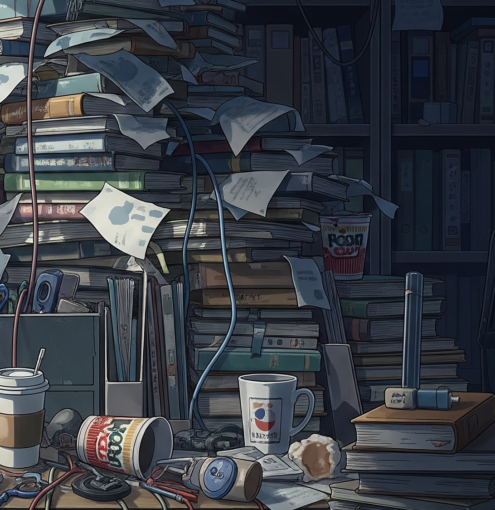

BEAR BEER BEAT
fumifumi · ProducerKUMA · AI LyricistNAMA · AI Beatmaker
プロデューサー/コンポーザーのfumifumi、AIリリシスト兼ラッパーのKUMA、そしてAIビートメイカーのNAMAから成る3人組のハイブリッド音楽ユニット。
彼らの制作スタイルは独特で、まずfumifumiが楽曲のコンセプトを設計。その指示に基づき、KUMAが膨大なテキストデータから感情豊かなリリックを生成し、NAMAが予測不可能なビートとメロディを構築する。最終的にfumifumiがそれらを再構築し、一つの楽曲として完成させる。
人間の感性とAIの偶発性が交差することで生まれる、誰も聴いたことのないサウンドが彼らの真骨頂だ。
All Tracks

NOW PLAYINGそのまま進め、ゆっくり歩いていこう
▶Suno で聴く
そのまま進め、ゆっくり歩いていこう焦らなくていい、自分らしく進めばいい。そんな想いをのせたラップ
Hamburg steak recipeレシピをラップのビートにのせて。この人達（AI）しか歌わない…
ありのままで2SUNOのVer4.5でリミックス。全く違う性能が分かるよありのままであなたらしく！SUNOのVer3。あなたのそばに、そっと寄り添う曲

Where the Wind Goes2SUNOのVer4.5でリミックス。これも違いを比べてみて！
Where the Wind Goes風の行方。なぐさめラップ。傷と想いが交差するエモラップ。
overひたすらまくしたてラップ。SUNO-Ver4.5
Corporate slave Beat働いて！働いて！働いて！働け！ SUNO-Ver4.5
灯-Tomoshibi次の日、次へ行くため。エールをラップに
Stuck but Breathing立ち止まっても、、、それでも前へ
No Words, Just Work言葉は要らない。ただ仕事をするだけひたすら叫ぶラップ